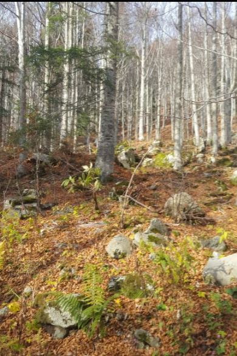

Muro a secco
Il muro a secco è una particolare costruzione, fatta di blocchi di pietra disposti e assemblati, senza l’uso di leganti o malte di alcun genere.Questo particolare tipo di muro è un manufatto umano antico, nonché habitat naturale di molte specie animali e vegetali, a causa dei molteplici anfratti, in cui crescono muschi, felci (molte specie di Asplenium per esempio) e piantine molto particolari, alcune tipicamente rupestri (dove non arriva l’acqua ), altre tipiche di ambienti con “stillicidio”, dove l’acqua proveniente dal pendio arriva gocciolando lungo una via preferenziale.

Le felci
Nella faggeta, come in tutti i boschi sani e abbastanza umidi, vivono molte specie di felci. Per il loro particolare modo di riprodursi esse hanno bisogno di umidità ma sono capaci di vivere anche sui muri a secco. Nella foto vediamo una tipica felci di faggeta, Dryopteris filix mas, la felce maschio. Altre tipiche di boschi di montagna sono: Polystichum setiferum, Polystichum aculeatum e Athyrium filix foemina, la felce femmina.